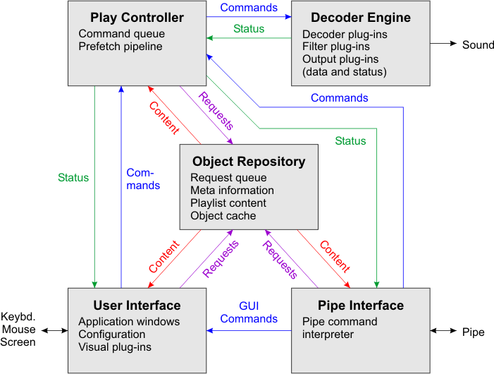

PM123 consists of several logical components that run asynchronously in seperate threads. This keeps the user interface responsive even in case of a job with longer duration like a network timeout.
The components are:
The Play Controller and the Object Repository are new with PM123 1.40.

The Play Controller starts at PM123 start-up and controls any play-back relevant activities. These are:
The Play Controller receives all instructions by a command queue. The queue is always processed in order. Multiple commands may be linked togehter. Linked commands are placed as unit in the queue and cannot be intercepted by commands from another source.
Changes in the play status are immediatle reflected to all observers by asynchronous notifications, except for the playing position, which obviously changes continously. The playing position has to be polled explicitely.
When an item completed to decode in playlist mode, the Play Controller imediately starts to decode the next playlist item even if the current item is not yet played completely. This results in a pipeline of prefetched items which may contain multiple items if they are short enough.
Once a decoder plug-in begins to decode an item, it starts a seperate thread that sends the decoded data through the data interface to the filter plug-ins and finally to the output plug-in. The plug-in chain is connected by the Play Controller when the playback starts. It is not disconnected between playlist items to prevent gaps between songs. But different decoders may be attached to the chain when the input format changes.
The decoder engine alsways has exactly one active decoder. If playback is stopped, the decoder engine terminates.
PM123 allways works internally with 16 bits per sample raw PCM data, to keep the complexity of the filter plug-ins low. If an older decoder returns data in a different format it is converted on the fly.
The User Interfaces controlls the application windows like Main Window, Playlist and Playlist Manager, Bookmarks and Tag Editor. Almost any actions are executed in the asyncronously Play Controller or the Object Repository. Only actions, that only affect the User Interface itself or that are edit operations like modification of playlists or song tags, are performed directly.
The User interface windows are synchronized by the Object Repository. Any changes to the Object Repository are immediately reflected to the User Interface by notifications (also called events). It makes no difference whether the change is a result of user action, a pipe command or any other asynchronous update like a changing stream title from an internet stream or a file system notification.
The Pipe interface provides similar functionality than the User Interface to remote applications. It can handle a set of pipe commands to control PM123 remotely. The pipe listener is started at PM123 start-up. It can handle only one remote connection at the same time, since it makes little sense to control PM123 from different applications simultaneously.
The Object Repository keeps track of the physical information, technical information (including playlist content) and meta information of all playable objects in PM123. The primary key of all repository objects is their URL. None of the above information on playable objects may exists outside the Object Repository.
The information in the Object Repository is usually updated by a couple of worker threads which receive their commands by a Request Queue. The Request Queue handles information requests on playable objects at two priorities. High priority requests are used if the Play Controller or a user action or a pipe command requires the desired information. Low priority requests are used for prefetching information on items that are likely to be used soon or if some information change requires dependent information in other playable objects to be updated, e.g. when the total playing time of a playlist changes if one of the nested playlists is modified. The number of worker threads controls the throughput of the Request Queue, but it also can end up with heavy I/O load on the system if too many workers are on the way.
The Object Repository provides notifications to observers like the User Interface when information in the repository is refreshed. Edit operations are applied directly to the items in the Object Repository and then the resulting change is again signalled to the User Interface by the notification mechanism.
The object lifetime of repository objects is managed automatically. If no other component (including other playable objects) holds a strong reference to a repository object, the object is removed from memory after a while. The latency effectively forms a cache of repository objects. PM123 uses reference counting to keep track of the needed objects. In case of cyclic references (recursive playlists) the objects are never removed from memory until PM123 terminates.